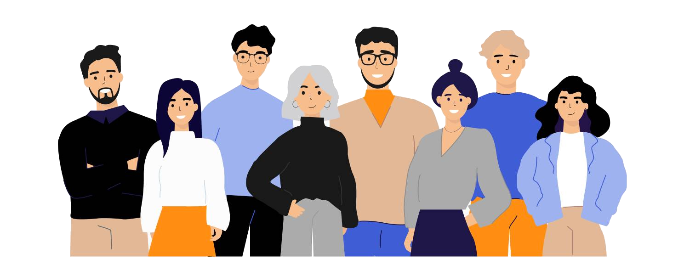

Виявляємо закономірності, знаходимо рішення
ПРО НАС

Ласкаво просимо до нашої презентації. Ми команда розробників об'єднаних однією ідеєю – зробити світ кращим, а життя простіше за допомогою сучасних технологій. Завдяки курсу ми об'єдналися у команду.
У нас різні здібності, різний розпорядок – але це нам не
завадило, а скоріше навпаки, бо одні працювали над проектом у
денний час, а інші продовжували у другу зміну. Але це не
допомогло нам уникнути "конфліктів версій"
 , так
що набиваючи шишки нам довелося розібратися з merge. Робота була
динамічною, складною, але цікавою.
, так
що набиваючи шишки нам довелося розібратися з merge. Робота була
динамічною, складною, але цікавою.
Раді представити вам нашу команду:
УЧАСНИКИ КОМАНДИ
Альона
Scrum Master
Іван
Developer
Наталія
Developer

Тарас
Developer
Андрій
Developer
Кому корисний наш продукт

- Телекомунікаційним компаніям
- Маркетинговим відділам
- Відділам обслуговування клієнтів
- Фінансовим відділам
- Аналітичним командам
- Та іншим
Прогнозування відтоку клієнтів для телекомунікаційної компанії –
це додаток, який використовує історичні дані клієнтів для
передбачення ймовірності їхнього відтоку. Модель аналізує
демографічні характеристики, використання послуг, тарифні плани, і
на основі цього прогнозує, які клієнти можуть припинити
користування послугами.
Це допомагає компаніям вчасно реагувати, розробляти
стратегії утримання клієнтів, знижувати відтік та покращувати
якість обслуговування.
Встановлення
- Переконайтеся, що ви в потрібній директорії
- Запустіть віртуальне середовище (pipenv shell)
- Створіть проект і встановіть необхідні бібліотеки: pipenv install django joblib scikit-learn xgboost
- Запустіть сервер:python manage.py runserver
Після виконання цих кроків ваш сервер повинен запуститись, і ви зможете отримати доступ до свого Django-проекту через веб-браузер за адресою http://127.0.0.1:8000/.